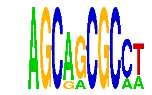

family_9 |
|---|
|  |
| Download PWM |
| Download instances (motifs) |
| Show motif distribution |
Query_ID | Query_Consensus | Subject_Name | Source_DB | Subject_ID | Length | Orientation | Offset | Divergence | Overlap | Subject_Consensus |
|---|---|---|---|---|---|---|---|---|---|---|
| family_9 | AGCAGCGCCT | TGCTGAY | JASPAR | PF0092 | 7 | reverse-complement | -3 | 0.479 | 4 | TGCTGAC |
| family_9 | AGCAGCGCCT | Bach1::Mafk | JASPAR | MA0591.1 | 15 | as given | -10 | 0.781 | 5 | RNSATGACTCAGCAN |
| family_9 | AGCAGCGCCT | RCGCANGCGY | JASPAR | PF0001 | 10 | reverse-complement | 4 | 0.886 | 6 | GCGCANGCGC |
Sequence | Start_position (from start) | Start_position (from end) | Average conservation | Best conservation score | Instance_with_best_CS | Best_Z-score | Instance_with_best_ZS | Strand |
|---|---|---|---|---|---|---|---|---|
| chr8:23618125-23619125 | 763 | 773 | 0 | 0 | AGCRRCGCCT | 16.767763 | AGCARCGCMT | -1 |
| chr6:136878844-136879844 | 403 | 413 | 0.0013 | 0.005 | AGCAGCGCMW | 18.047985 | AGCAGCGCMW | 1 |
| chr18:43741312-43742312 | 608 | 618 | 1 | 1 | AGCAGCGCMW | 18.047985 | AGCAGCGCMW | -1 |
| chr14:35032619-35033619 | 513 | 523 | 0.0139 | 0.065 | AGCAGCGCMW | 16.767763 | AGCARCGCMT | 1 |
| chr6:115644506-115645506 | 238 | 248 | 1 | 1 | AGCRRCGCCT | 18.510172 | AGCRRCGCCT | 1 |
| chr13:103434495-103435495 | 504 | 514 | 0.0004 | 0.002 | AGCARCGCMT | 18.510172 | AGCRRCGCCT | -1 |
| chr16:4522393-4523393 | 647 | 657 | 0.9589 | 0.999 | AGCRRCGCCT | 16.767763 | AGCARCGCMT | 1 |
| chrX:6154048-6155048 | 885 | 895 | 0.0069 | 0.023 | AGCAGCGCMW | 18.047985 | AGCAGCGCMW | -1 |
| chr6:100112855-100113855 | 233 | 243 | 0.0013 | 0.005 | AGCAGCGCMW | 18.047985 | AGCAGCGCMW | 1 |
| chr11:74826169-74827169 | 474 | 484 | 1 | 1 | AGCARCGCMT | 18.510172 | AGCRRCGCCT | -1 |
| chr10:95833402-95834402 | 141 | 151 | 0.0008 | 0.002 | AGCRRCGCCT | 16.767763 | AGCARCGCMT | 1 |
| chr1:183396627-183397627 | 766 | 776 | 0.0002 | 0.002 | AGCAGCGCMW | 18.047985 | AGCAGCGCMW | 1 |
| chr5:114380760-114381760 | 313 | 323 | 0.7903 | 1 | AGCAGCGCMW | 18.047985 | AGCAGCGCMW | 1 |
| chr16:96348364-96349364 | 606 | 616 | 0.0019 | 0.004 | AGCAGCGCMW | 16.767763 | AGCARCGCMT | 1 |
| chr9:31495516-31496516 | 324 | 334 | 0.0002 | 0.002 | AGCAGCGCMW | 18.047985 | AGCAGCGCMW | 1 |
| chr2:68273991-68274991 | 184 | 194 | 0.0015 | 0.004 | AGCARCGCMT | 18.510172 | AGCRRCGCCT | 1 |
| chr15:93368892-93369892 | 329 | 339 | 0.2373 | 0.312 | AGCARCGCMT | 18.510172 | AGCRRCGCCT | -1 |
| chr1:138055606-138056606 | 923 | 933 | 0.045 | 0.114 | AGCARCGCMT | 18.510172 | AGCRRCGCCT | 1 |
| chr11:85643171-85644171 | 746 | 756 | 0.0361 | 0.052 | AGCRRCGCCT | 18.510172 | AGCRRCGCCT | -1 |
| chr12:9587059-9588059 | 755 | 765 | 1 | 1 | AGCRRCGCCT | 18.510172 | AGCRRCGCCT | 1 |
| chr2:19580015-19581015 | 307 | 317 | 0.6381 | 0.944 | AGCRRCGCCT | 18.510172 | AGCRRCGCCT | 1 |
| chr11:97199841-97200841 | 240 | 250 | 0.5033 | 1 | AGCRRCGCCT | 16.767763 | AGCARCGCMT | 1 |
| chr8:37808713-37809713 | 616 | 626 | 0.002 | 0.008 | AGCAGCGCMW | 16.767763 | AGCARCGCMT | 1 |
| chr3:128693060-128694060 | 841 | 851 | 0.2825 | 0.971 | AGCRRCGCCT | 16.767763 | AGCARCGCMT | 1 |
| chr6:83406467-83407467 | 698 | 708 | 0.002 | 0.005 | AGCRRCGCCT | 16.767763 | AGCARCGCMT | -1 |
| chr1:64349006-64350006 | 513 | 523 | 0.0547 | 0.156 | AGCAGCGCMW | 16.767763 | AGCARCGCMT | 1 |
| chr8:14683219-14684219 | 905 | 915 | 0.0001 | 0.001 | AGCAGCGCMW | 18.047985 | AGCAGCGCMW | 1 |